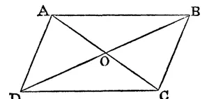

Content of type 'book'

A Sequel to the First Six Books of the Elements of Euclid
“I have endeavoured to collect and arrange in a systematic form all those elementary geometrical propositions not given in Euclid which a student will require in reading Mixed Mathematics, or before entering on the study of the Higher Pure Mathematics.”
—John Casey, Preface to A Sequel to Euclid, p. v (f.
0007)